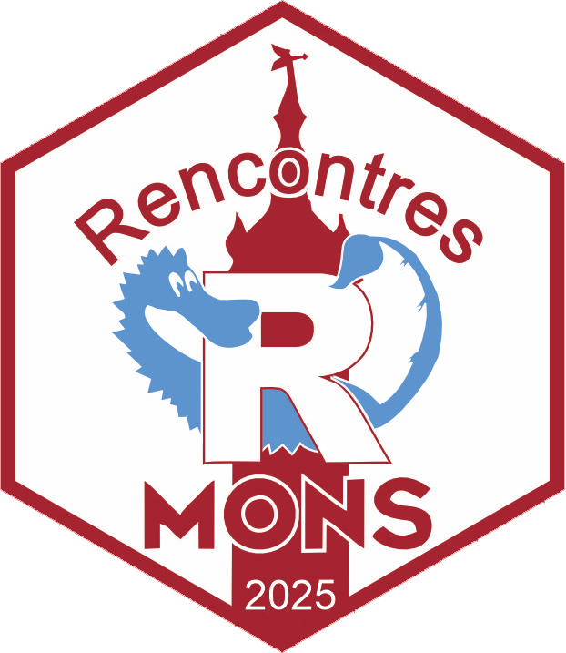
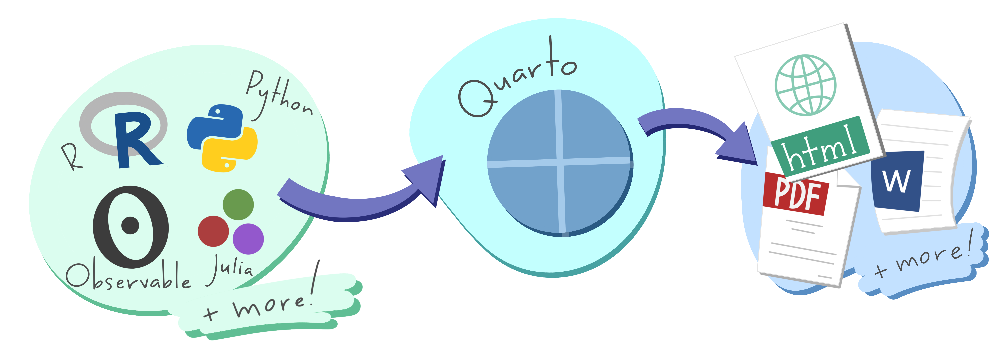
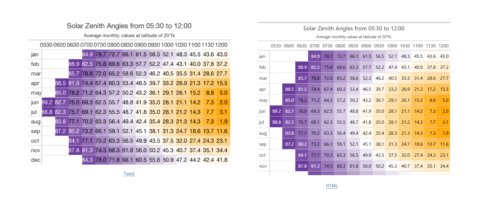

Personnaliser ses documents Quarto
A la découverte de `_brand.yml`

Christophe Dervieux
Posit PBC
20 mai 2025

Un système de publication scientifique et technique open-source, intégrant l’exécution de code.
Quarto est l’évolution de R Markdown
- il unifie et améliore l’écosystème R Markdown, pour les utilisateurs R.
- il l’étend pour les personnes qui ne connaissent pas R Markdown (Python, Julia, Observable, …)

Issue de la présentation “Hello, Quarto” par Julia Lowndes et Mine Çetinkaya-Rundel, présentée à la RStudio::conf(2022). Illustrée par Allison Horst.
Produire des HTML
Produire des PDF
Déjà bien, mais…
Les organisations ont besoin de personnaliser leurs documents selon leur charte graphique.
Prenons un exemple
Prenons un exemple

Produire des HTML avec _brand.yml
Produire des PDF avec _brand.yml
_brand.yml
- Créez un fichier
_brand.ymldans votre projet - Définissez les couleurs, les polices, les logos, etc.
- Il pourra être utilisé par tous les outils supportant
_brand.yml
meta🔗 Spec- Information de l’organization, nom de l’entreprise, URLs, etc.
meta🔗 Spec- Information de l’organization, nom de l’entreprise, URLs, etc.
color🔗 Spec- Palette de couleurs de l’image de marque de l’organisation.
typography🔗 Spec- Polices pour les différents éléments.
logo🔗 Spec- Logos pour l’image de marque de l’organisation.
defaults🔗 Spec-
Options pour le support spécifique par des outils utilisant
_brand.yml
Pulse Mobile Brand
_brand.yml
meta:
name: Pulse Mobile
link: https://pulse.mobile
color:
palette:
purple: "#8a2be2"
blue: "#00c2ff"
green: "#4dc964"
yellow: "#ffd600"
red: "#ff5a5f"
black: "#121212"
white: "#f8f8f8"
primary: purple
info: blue
typography:
fonts:
- family: Montserrat Alternates
source: google
- family: Montserrat
source: google
- family: Space Mono
source: google
base: Montserrat
headings:
family: Montserrat Alternates
weight: 500
monospace: Space Mono
monospace-inline:
color: purple
logo:
images:
full-color: logos/logomark-full-color.png
med-color: logos/logomark-med-color.png
icon-color: logos/icon-color.png
small: icon-color
medium: med-color
large: full-color_brand.yml avec Quarto
_brand.yml avec Quarto
Pris en compte par défaut
À mettre à la racine du projet Quarto
.
├── report.qmd
├── _brand.yml
└── _quarto.ymlSi le fichier existe, il est automatiquement utilisé par Quarto.
_brand.yml avec Quarto
Configurations possibles
Dans le document ou le _quarto.yml
_brand.yml avec Quarto
Configurations possibles
Dans le document ou le _quarto.yml
Support spécifique à Quarto
Intégration avec les thèmes Quarto
Quarto Themes pour format: html.
équivalent avec un _brand.yml à
mais l’ordre peut être important: Quarto Themes Layering
Intégration avec les thèmes Quarto
Quarto Themes pour format: html.
équivalent avec un _brand.yml
mais l’ordre peut être important: Quarto Themes Layering
Intégration avec les thèmes Quarto
Quarto Themes pour format: html.
équivalent avec un _brand.yml
mais l’ordre peut être important ➡️ Quarto Themes Layering
Thèmes Clair et Sombre pour HTML
Support pour PDF avec Typst
Typst CSS
Une fonctionnalité Quarto 1.5 qui permet de convertir des propriétés CSS en propriétés Typst.
Avantage ➡️ Style similaire entre format HTML et format Typst.
Exemple (Typst à droite / HTML à gauche)
Typst CSS
Adaptation pour _brand.yml
Variable pour template:
brand-coloretbrand-background-color
Exemple: Rectangle avec la couleur primairechoix du mode sombre ou clair à utiliser
Pour résumer
From ‘Theming Made Easy: Introducing Brand YAML for Shiny’ by Garrick Aden-Buie
Un seul fichier à réutiliser


 Rapports R Markdown
Rapports R Markdown
 Sites web de documentation de package avec
Sites web de documentation de package avec pkgdown
Un seul fichier à réutiliser
Avec des options communes
Respect de la specification
_brand.ymlSupports spécifiques
brand.defaults.bootstrappour Quarto et Shinybrand.defaults.shiny.themepour Shiny
Un seul fichier à réutiliser
Un seul fichier à réutiliser
Un seul fichier à réutiliser
Un seul fichier à éditer
Positron, VS Code, RStudio
brand_ymlPython 📦brand.ymlR 📦 (en projet)
En savoir plus sur brand.yml
Questions?
Merci!
And thanks to Garrick Aden-Buie letting me reuse part of ‘Theming Made Easy: Introducing Brand YAML for Shiny’ examples.
Follow along at https://cderv.github.io/rr2025-quarto-brand-yml/ and https://quarto.org